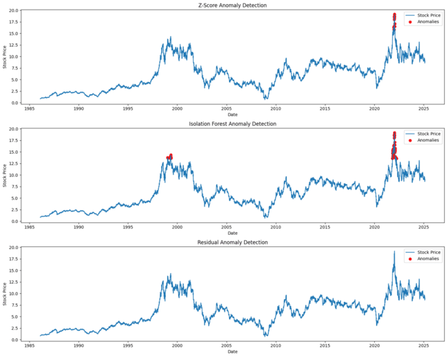

About Me
I am a passionate computer science student with a keen interest in artificial intelligence, machine learning, and quantitative development. I love building systems that solve complex problems and learning new technologies to stay at the edge of innovation.
Contact Information
Anomaly Detection in Financial Time Series
Predicting next-day returns for Ford Motor Company stock using Z-scores, Isolation Forest, residual analysis and LSTM neural networks on 39 years of daily price data.

This above is the plotted result of the Z-score, Isolation Forest and Residual Anomaly Detection.
- IC: 0.072
- Sharpe: 0.37
- Stack: Python, TensorFlow, LSTM
Fake News Classifier
Classifying news articles as "FAKE" or "REAL" using NLP techniques and a Linear Support Vector Classifier trained on labelled news data.
- Stack: Python, scikit-learn, NLTK
- Method: TF-IDF + Linear SVC
AI Resume Screener
A CLI tool that compares resumes against job descriptions using TF-IDF vectorization and cosine similarity to produce a match score and extract overlapping skills.
- Stack: Python, scikit-learn, python-docx
- Output: Fit / Maybe / Reject classification
RL Trading Bot
A reinforcement learning agent trained with PPO on 8 years of AAPL data to autonomously buy, hold, or sell stock. Achieved a 12.5% return on unseen test data, growing a $10,000 portfolio to $11,250.96.

The above chart shows the agent's buy/sell decisions overlaid on price data, with portfolio growth and technical indicators (RSI, MACD, Bollinger Bands).
- Return: 12.5% on unseen data
- Stack: Python, Stable-Baselines3, Gymnasium, yfinance
- Method: PPO + RSI, MACD, Bollinger Bands, SMA/EMA50